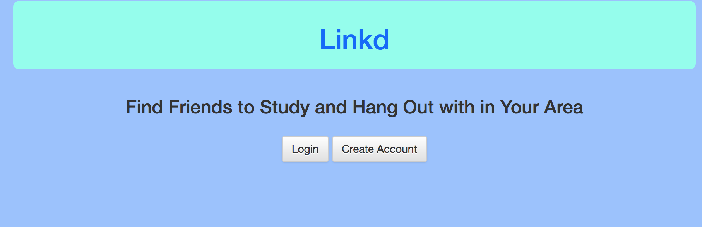
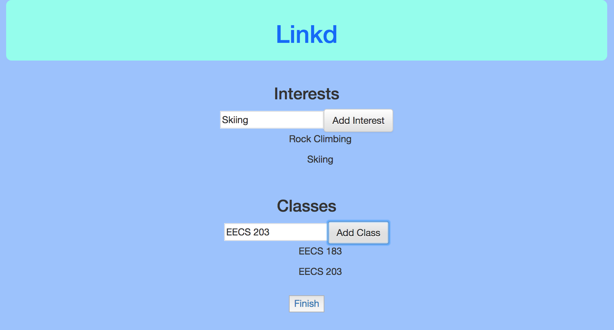
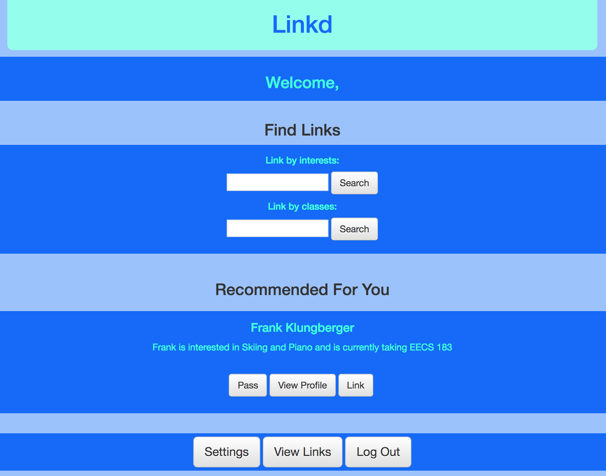
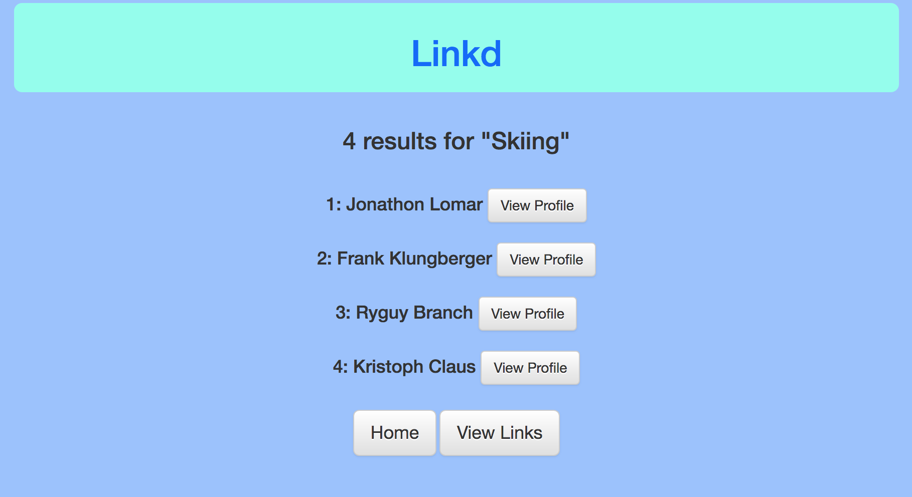
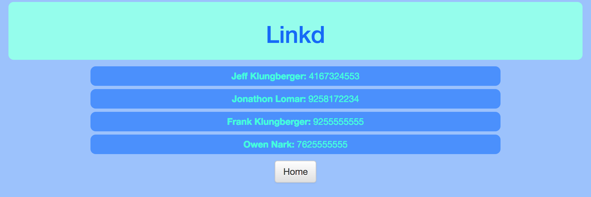
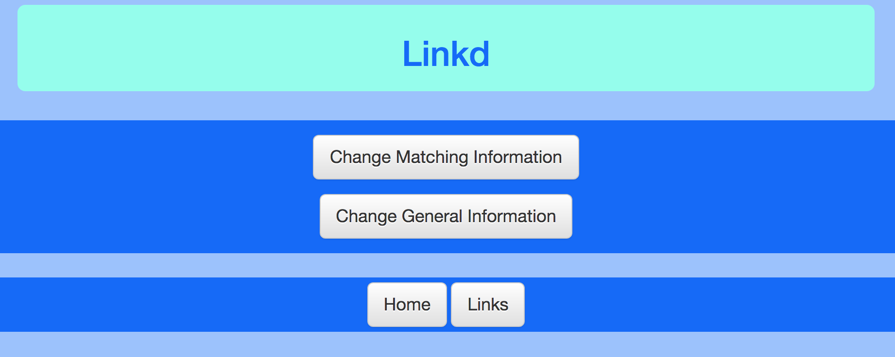

Many newcomers to Ann Arbor don’t know anyone when they first move. Although they can be good ways to meet people, classes/clubs/work may not always be enough to meet good friends.
Linkd is our solution to the user need. Linkd is a platform for students to meet other students who are interested in the same things as them and in the same classes as them. It can be used to find study groups, find people who do a certain activity, or just to make friends.
To start, you are shown this page which allows you to either login or create a new account. We'll create a new account!
After entering some basic contact information, you will enter your interests and the classes you are currently taking so we can match you with the right people.
Now that you've created your profile, you will be brought to our landing page.
You can do many things from this page, including finding people to link with who are interested in skiing!
You can also view the people who you have already linked with!
You can also change your matching and general contact information!
